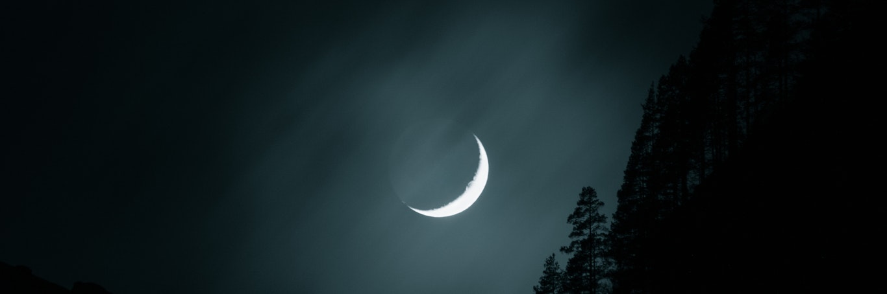
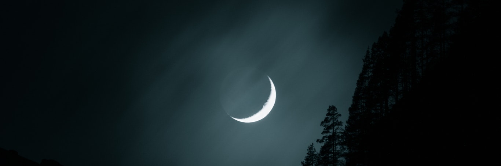
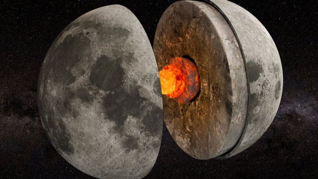
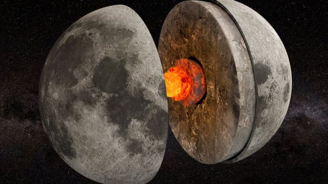

A Lua é o único satélite natural da Terra e o quinto maior do Sistema Solar. É o maior satélite natural de um planeta no sistema solar em relação ao tamanho do seu corpo primário tendo 27% do diâmetro e 60% da densidade da Terra, o que representa 1⁄81 da sua massa. Entre os satélites cuja densidade é conhecida, a Lua é o segundo mais denso, atrás de Io(uma das quadro Luas de jupter). Estima-se que a formação da Lua tenha ocorrido há cerca de 4,51 mil milhões* de anos, relativamente pouco tempo após a formação da Terra. Embora no passado tenham sido propostas várias hipóteses para a sua origem, a explicação mais consensual atualmente é a de que a Lua tenha sido formada a partir dos detritos de um impacto de proporções gigantescas entre a Terra e um outro corpo do tamanho de Marte.
Existem varias teorias de como a lua surgiu, porem a principal teoria é a da formação da Lua é de 1975 e considera que um corpo celeste do tamanho de Marte, chamado Theia, colidiu com a Terra há cerca de 4,5 bilhões de anos, quando nosso planeta ainda estava em formação e era uma grande bola pastosa e quente. Um pedaço do globo terrestre teria se soltado e formado a Lua.
- Distância do Sol: 152.000.000 km
- Velocidade orbital média: 1,03 quilômetro por segundo.
- Diâmetro equatorial: 3.474,8 km
- Área da superfície: 0,074 Terras 3,793 x 107 km²
- Massa: 7.3477×10ˆ19 toneladas
- Temperatura à superfície: -184 graus Celsius noite // 214 graus Celsius dia.
- Translação: 365 dias
- Rotação: 27 dias
O campo magnético externo da lua é de cerca de 1-100 nanotesla, que é menos de um centésimo do campo magnético da Terra. A lua não tem um campo magnético dipolo global. Por exemplo, o campo magnético gerado pelas características do gerador terrestre do núcleo de metal líquido mostra apenas a magnetização da crosta terrestre, que pode ter sido obtida no início da história do geradores da Terra ainda em operação. De acordo com outra hipótese, parte da magnetização remanescente pode se originar do campo magnético transitório gerado durante um grande evento de impacto, por meio da expansão da nuvem de plasma criada pelo impacto na presença de um campo magnético ambiente. Isto é apoiado pela localização aparente da magnetização crustal principal perto dos enantiômeros da bacia de impacto principal.
A Lua é constituída de uma crosta (camada sólida superficial, análoga à crosta terrestre), um manto (a camada situada sob a crosta, tal como o manto terrestre) e um núcleo (a camada mais profunda, analogamente ao núcleo terrestre).
A Lua possui um núcleo interno sólido e rico em ferro com 240 km de raio e um núcleo externo fluido composto essencialmente por ferro em fusão e com um raio de aproximadamente 300 km.
O núcleo é envolto por uma camada parcialmente em fusão com um raio de cerca de 500 km.Pensa-se que esta estrutura se tenha desenvolvido a partir da cristalização fracionada de um oceano de magma global, pouco tempo depois da formação da lua, há cerca de 4,5 mil milhões de anos. A cristalização deste oceano de magma teria criado um manto máfico através de precipitação e afundamento dos minerais olivina, piroxena e ortopiroxena
Depois que cerca de três quartos do oceano de magma se cristalizaram, é possível formar o plagioclásio deixado na superfície e formar a crosta. O líquido final cristalizado permanecerá inicialmente entre a crosta e o manto, que contém um grande número de elementos incompatíveis e geradores de calor.
A atmosfera da Lua é tão rarefeita que pode praticamente ser considerada vácuo, sendo a sua massa total inferior a 10 toneladas. A pressão à superfície desta pequena massa é de cerca de 3 x 10−15 atm (0,3 nPa) e varia ao longo do dia lunar. A atmosfera tem origem na desgaseificação e pulverização catódica – a libertação de átomos do solo lunar provocada pelo bombardeio de iões do vento solar.
A ausência de elementos neutros (átomos ou moléculas) como oxigénio, nitrogénio, carbono, hidrogénio e magnésio, que estão presentes no regolito, ainda não é compreendida

 
